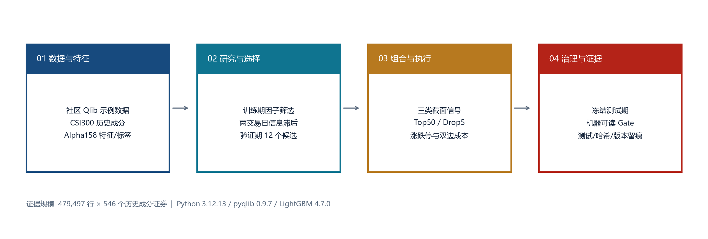
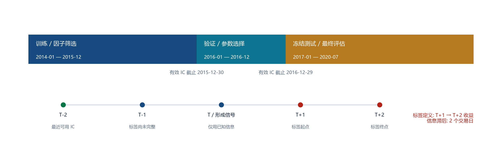
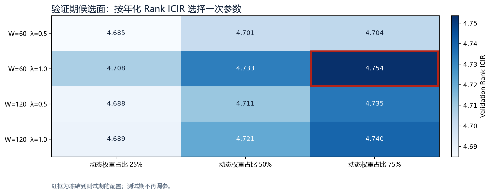
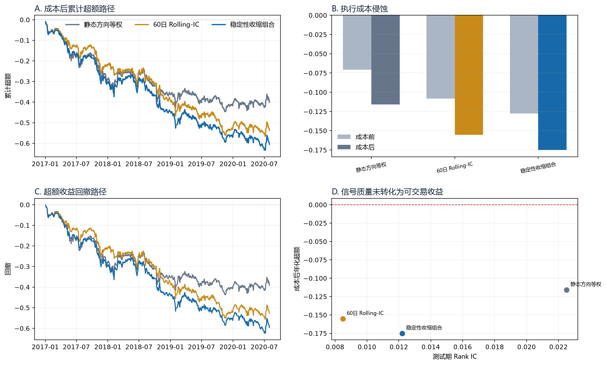

Quant Research Engineering · Case Study v3
Qlib Factor Robustness Lab
该项目是一套基于 Microsoft Qlib 的量化研究验证系统，用于检验因子信号能否从统计相关性跨越到含交易约束的组合结果。项目由两条证据链组成：上游基线复现用于验证研究环境，扩展实验用于验证时间安全、参数治理和研究晋级规则。
结论：扩展方案未通过研究晋级 Gate
信号层存在正 Rank IC，但成本后收益、信息比率、回撤和相对对照优势均不满足预设标准。结果被保留为失败诊断，而非包装为策略改进。
BLOCK · 3/8
数据覆盖
479,497
面板行；546 个历史成分证券
冻结测试
868 日
2017-2020；参数仅由 2016 验证期确定
研究治理
12 候选
验证期一次选参；两交易日信息滞后
质量证据
11 tests
核心覆盖率 86%；配置 SHA-256 留痕
1. 系统边界与架构

证据链 A：上游工作流复现
Alpha158 + LightGBM + TopkDropoutStrategy 在锁定环境中完整运行。Rank IC 为 0.0496，成本后年化超额为 9.56%。
该结果只证明上游基线与本地环境可运行，不作为扩展方案的“改进前”收益。
证据链 B：稳定性加权扩展评估
三类因子组合在相同测试区间、持仓规则和交易成本下接受对照。稳定性收缩方案成本后年化超额为 -17.50%，研究晋级状态为 BLOCK。
两条证据链目的不同，避免把不可直接比较的模型结果拼成收益提升叙事。
2. 研究协议与时间可得性

信号构造
ICj,t = Spearman(Fj,t, Rt+1→t+2)
wj,t ∝ sign(μj,t) · max(|μj,t| − λ·SEj,t, 0)
动态权重与训练期固定方向按验证期确定的比例收缩，并按绝对权重和归一化。
参数治理
- 训练期仅用于筛选 30 个因子及确定静态方向；
- 验证期比较 2 个窗口 × 2 个不确定性惩罚 × 3 个收缩比例；
- 测试期参数冻结，不依据测试结果二次选择；
- 三组信号进入同一 Qlib 执行器。

3. 样本外执行证据

| 扩展方案 | Rank IC | ICIR | 成本前超额 | 成本后超额 | 成本后 IR | 最大回撤 |
|---|---|---|---|---|---|---|
| 静态方向等权 | 0.0225 | 1.881 | -7.06% | -11.59% | -1.056 | -43.69% |
| 60日 Rolling-IC | 0.0085 | 0.736 | -10.82% | -15.52% | -1.575 | -55.65% |
| 稳定性收缩组合 | 0.0122 | 1.093 | -12.75% | -17.50% | -1.738 | -62.44% |
失败诊断：三组扩展信号均具有正的截面排序相关性，但组合端持续落后于基准。执行成本造成约 4.5-4.8 个百分点的年化侵蚀；稳定性收缩方案同时出现更高换手、更低成本前收益和更深回撤。因此，失败不能只归因于手续费，更可能涉及尾部选股质量、组合集中和信号稳定性不足。
4. 机器可读研究晋级 Gate
Gate 的范围是“是否进入更高保真研究阶段”，并非生产或实盘批准。阈值在 YAML 中固定，页面只读取运行结果。
| 检查项 | 观测值 | 阈值 | 结果 |
|---|---|---|---|
| 测试标签日 | 868 | 500 | PASS |
| Rank IC | 0.012 | 0.000 | PASS |
| 年化 Rank ICIR | 1.093 | 0.500 | PASS |
| 成本后年化超额 | -17.50% | 0.00% | FAIL |
| 成本后信息比率 | -1.738 | 0.000 | FAIL |
| 最大回撤下限 | -62.44% | -30.00% | FAIL |
| 相对最佳对照收益优势 | -5.92% | 0.00% | FAIL |
| 相对最佳对照 IR 优势 | -0.682 | 0.000 | FAIL |
通过的证据
测试样本长度、Rank IC 与 Rank ICIR 满足最低研究条件，表明信号并非完全随机。
阻断原因
成本后超额、信息比率、最大回撤以及相对两个对照的收益与 IR 优势均未达标。因此系统不允许把该扩展称为“策略改进”。
5. 可复现性、边界与下一阶段
可复现证据
- Python 3.12.13 / pyqlib 0.9.7 / LightGBM 4.7.0
- 配置哈希：
96caea830e6e45f6… - 11 项测试；核心模块覆盖率 86%
- CSV 路径、JSON 汇总、HTML 与 PDF 均由脚本生成
下一阶段研究假设
- 把行业和规模暴露约束加入组合层；
- 显式约束换手并检验不同持有期；
- 分解 Top50 尾部选择与全截面 IC 的偏差；
- 在更可靠、更新的数据上重新校准结论。